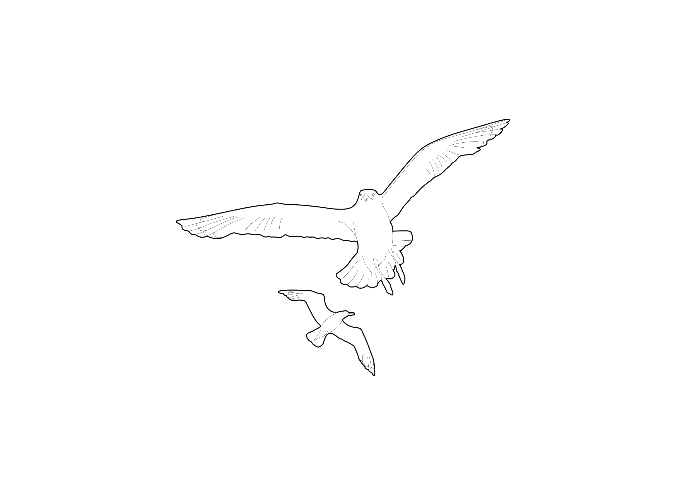

An interactive lens on coastal habitat health
This platform evaluates shorebird habitat quality in Lianyungang coastal wetlands using remote sensing and spatial ecological indicators. It turns an Earth Engine workflow into a decision-support interface where managers, planners, and researchers reason directly with the spatial evidence.
Coastal wetlands are losing their connective tissue
The Yellow Sea is one of the most pressured coastal systems on Earth, and its tidal flats are keystone habitat for shorebirds on the East Asian–Australasian Flyway. Five concurrent pressures shape the conservation question.
-
01
Tidal-flat habitat loss
Reclamation and aquaculture have shrunk tidal-flat extent across the Lianyungang coastline.
-
02
Wetland fragmentation
Remaining flats and marshes are increasingly disconnected from one another.
-
03
Pressure from development
Ports, embankments, and aquaculture continue to compete for the land–sea interface.
-
04
Need for fast prioritisation
Limited conservation budgets need spatially explicit answers, not generic reports.
-
05
Migratory significance
Local choices in Lianyungang have flyway-scale consequences for migratory shorebirds.
Designed for people making decisions on the ground
The interface is shaped by the workflow of practitioners — short reasoning loops, clear visual evidence, and language that travels between technical and non-technical audiences.
-
Conservation agencies
Statutory bodies prioritising restoration and monitoring across coastal districts.
01 · Statutory -
Coastal planners
Spatial planners weighing development against ecological function at the land–sea boundary.
02 · Planning -
Researchers
Ecologists and remote-sensing scientists exploring habitat structure and temporal change.
03 · Research -
NGOs & local groups
Field organisations advocating for evidence-based wetland protection and outreach.
04 · Advocacy -
Students
Postgraduates working with GEE-based habitat assessment and geocomputation.
05 · Education
Layered inputs from imagery to ecology
Inputs are drawn from open remote-sensing archives and ecological literature. Asset paths are kept inside the technical documentation; the public interface is written in ecological language.
| Category | Dataset | Description | Source |
|---|---|---|---|
| GEE | Sentinel-2 SR Harmonized | Multi-temporal optical imagery used for tidal-flat segmentation. | Link → |
| Landsat 8 OLI Surface Reflectance | Long-term coastal observation archive (2014–2024). | Link → | |
| JRC Global Surface Water | Persistent water mask supporting tidal-flat extraction. | Link → | |
| Habitat | Annual tidal-flat layers | Per-year tidal-flat masks for 2014, 2019, and 2024. | Custom asset |
| Roost vegetation patches | Coastal salt marsh and reedbed polygons used as roost candidates. | Custom asset | |
| Boundary | Study area | Lianyungang Coastal Wetland boundary clip. | Custom asset |
| Knowledge | Literature thresholds | Movement-distance ranges drawn from shorebird ecology literature. | References ↓ |
From raw imagery to a decision-ready habitat surface
The pipeline is built from five chained stages. Each stage is encapsulated as an Earth Engine module so users reason about the analysis in steps, not as a black box.
Proximity Analysis
Distance surfaces are computed outwards from roost vegetation patches. Tidal-flat habitat is queried against these surfaces to test whether feeding habitat lies within suitable movement range.
Tidal-flat Change Detection
Per-year tidal-flat masks are differenced into three change classes — stable, gain, and loss — across selected baseline / comparison years.
Habitat Priority Classification
Distance-based accessibility is combined with habitat coverage to identify well-served habitat, habitat gaps, connected roosts, and isolated roosts.
Threshold-based Scoring
User-defined ecological thresholds reclassify habitat on demand, exposing how sensitive the decision surface is to assumption.
Interactive Geovisualisation
All outputs are surfaced through a single Earth Engine app — sliders, dropdowns, charts, and click-driven popups — so the user becomes the analyst.
Six controls that turn a script into a tool
The interactive interface is narrow in scope by design — six core controls cover everything a user needs to test a habitat hypothesis without leaving the map.
Analysis mode selector
Switches between Proximity, Change, and Priority modules without leaving the map.
Year comparison tools
Baseline / comparison year dropdowns for 2014, 2019, and 2024 imagery.
Threshold sliders
Continuous sliders for optimal, sub-optimal, and conservation thresholds.
Results panel
Live area summaries and bar / donut charts that update in step with the map.
Dynamic legend
Map legend that re-renders to match the active module's class palette.
Click interactions
Per-zone popups with class, area, and a short ecological interpretation.
The live habitat explorer
The full Earth Engine application is embedded below. Use the panel on the left of the embedded app to switch modules, adjust thresholds, and run analyses; the map updates immediately.
Six steps from a question to a decision
The interaction loop is short by design. Each step in the explorer maps to a small slice of Earth Engine code — copy any block to inspect or adapt it.
-
1
Select mode
Pick Proximity, Change Detection, or Priority depending on the question.
javascript// Step 1 — choose the analysis module var mode = ui.Select({ items: ['Proximity', 'Change', 'Priority'], value: 'Proximity' }); -
2
Choose years or thresholds
Set baseline / comparison years, or movement-distance thresholds.
javascript// Step 2 — set parameters var baseYear = 2014; var compYear = 2024; var optKm = 2.5, subKm = 5.0, marKm = 8.0; -
3
Run analysis
Execute the chosen module — Earth Engine processes the imagery in the cloud.
javascript// Step 3 — run the proximity pipeline var distance = roosts.distance().clip(studyArea); var classes = distance .where(distance.lte(optKm * 1000), 1) .where(distance.gt(optKm * 1000).and(distance.lte(subKm * 1000)), 2); -
4
Inspect outputs
Read map layers, area cards, and module-specific charts as they update.
javascript// Step 4 — push results to the map and panel Map.addLayer(classes, accVis, 'Accessibility'); panel.add(ui.Chart.image.byClass(classes, 'class', studyArea)); -
5
Compare habitat patterns
Switch modules and parameters to triangulate where habitat is fragile.
javascript// Step 5 — overlay change against priority var stable = flat14.and(flat24); var loss = flat14.and(flat24.not()); var priority = classes.eq(3).or(loss); -
6
Support decisions
Take the priority surface into a planning, restoration, or advocacy context.
javascript// Step 6 — export the priority surface Export.image.toDrive({ image: priority, region: studyArea, scale: 30, description: 'lianyungang_priority_2024' });
References & further reading
- Ma et al. (2023) Tidal-flat dynamics and shorebird habitat assessment along the western Yellow Sea using Google Earth Engine. Remote Sensing of Environment.
- Rogers et al. (2006) High-tide habitat choice: insights from modelling roost selection by shorebirds around a tropical bay. Animal Behaviour, 72(3), 563–575.
- Murray, N. J. et al. (2019) The global distribution and trajectory of tidal flats. Nature, 565, 222–225.
- Studds, C. E. et al. (2017) Rapid population decline in migratory shorebirds relying on Yellow Sea tidal mudflats as stopover sites. Nature Communications, 8, 14895.
- Google Earth Engine Earth Engine Documentation. developers.google.com/earth-engine — accessed 2026.